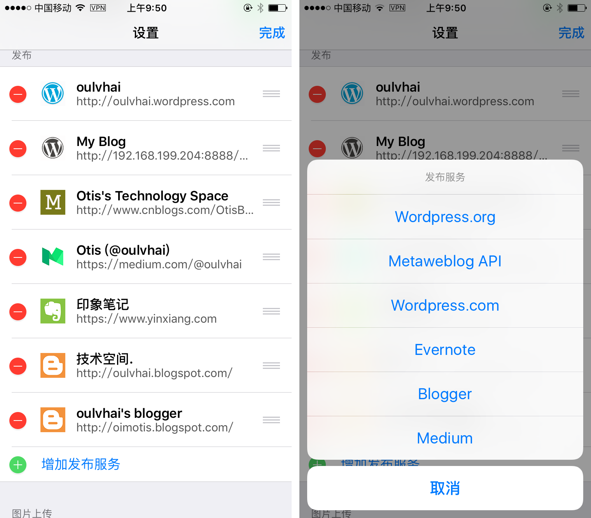
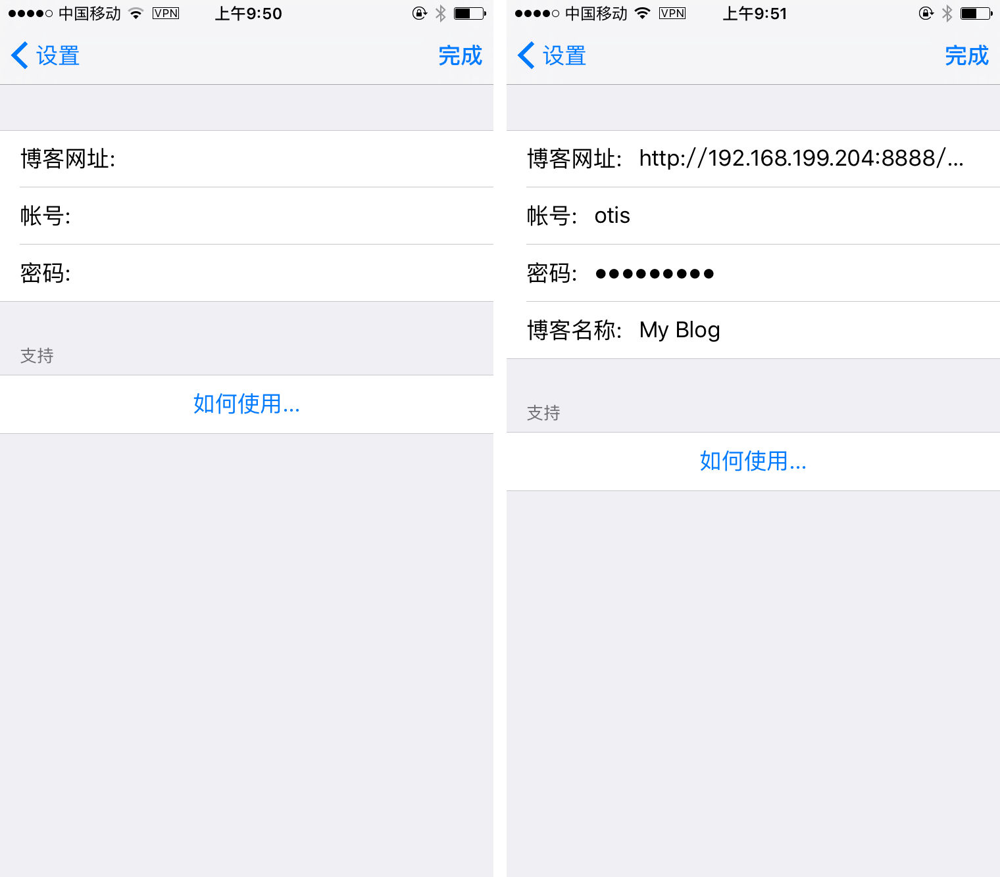
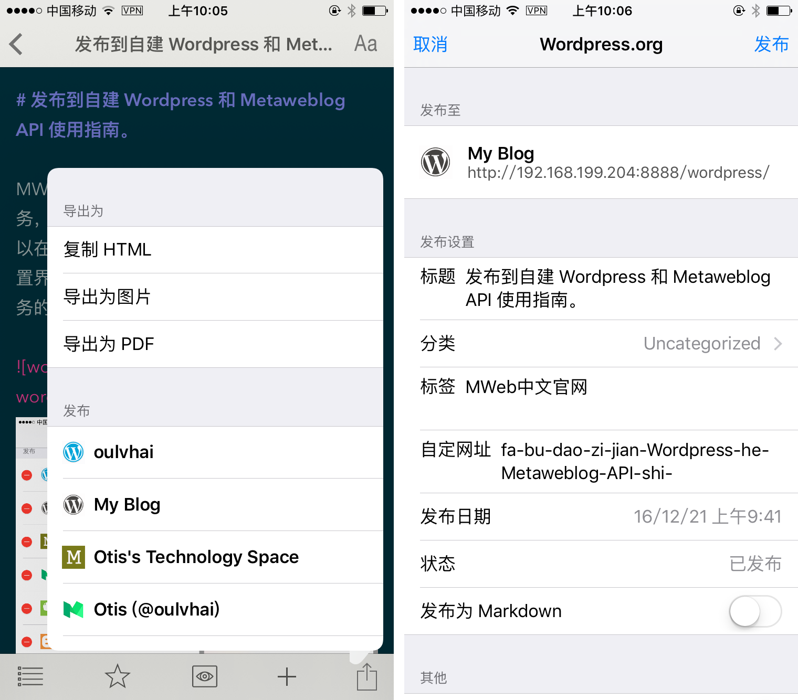
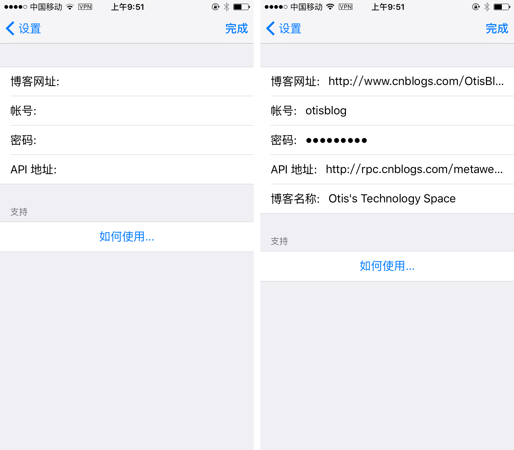

iOS 版 MWeb 发布到自建 Wordpress 和 Metaweblog API 使用指南
MWeb 的发布服务的使用方法是先增加发布服务，再使用。在 iOS 中，要增加发布服务，可以在首页中，点左上角的 “设置” 按钮，进入设置界面，并滑动到底部，就会看到增加发布服务的按钮了，如下图。

在上图右边的图中，选择 Wordpress，会出来如下图左边的图的界面，填入你的博客网址，帐号，和密码，点右上角的 “完成” 按钮即可。如果你要修改，可以点击增加后的 Wordpress 发布服务，就会出来下图右边的图的界面，修改完成后，点完成按钮即可。要注意的时，点完成按钮时，会去验证你设置的 Wordpress 是否正常，如果不正常，将不会保存。

当增加了发布服务后，就可以使用了。使用方法非常简单，点想要发布的文档，进入编辑界面，点击右下角的 “分享” 按钮，就会出来如下图左边的图所示的界面。在这里可以看到刚刚增加的 Wordpress 发布服务 “My Blog”，点击 “My Blog” 后，会出来下图右边的图所示的设置界面，设置好后，点右上角的发布按钮即可。另外，如果你修改了文档，还可以调出这个界面，这时界面中会有显示此文档已发布过了，再点 “发布” 按钮时，默认会更新已发布的文档。如果你想要发布成新的文章，取消 “更新已发布文档” 的选项即可。

另外特别说明一下上图右边的图中的 “发布为 Markdown” 选项，如果你没有明确自己的 Wordpress 支持纯 Markdown，请不要选择这个选项。
发布至 Metaweblog API
在增加发布服务中，选择 Metaweblog API，会出现下图左边的图的界面。发布至 Metaweblog API 的填入项目中，多了名为 “API 地址” 这一项。每个支持 Metaweblog API 的网站，都提供一个 API 地址，填入即可。下边列出国内网站中常用的 Metaweblog API 地址。
- 新浪博客：http://upload.move.blog.sina.com.cn/blog_rebuild/blog/xmlrpc.php 新浪博客的 API 已关闭了
- cnblogs：http://www.cnblogs.com/Blog名/services/metaweblog.aspx。其中 Blog 名 请换为您的博客名。cnblogs 的博客后台设置，拉到最下面，也可以找到这个网址。比如说我的是 http://rpc.cnblogs.com/metaweblog/OtisBlog 两者网址不同，但是效果一样。
- oschina：https://my.oschina.net/action/xmlrpc
- typecho 博客：http://xx.com/action/xmlrpc，其中 xx.com 为你的博客网址。如果 typecho 还没有进行 url rewrite，则为 http://xx.com/index.php/action/xmlrpc

点击增加了 Metaweblog API 服务，会显示上图右边的图的界面，在这里可以修改相关信息。使用已增加的 Metaweblog API 服务的方法，跟上边的 Wordpress 完全一样。